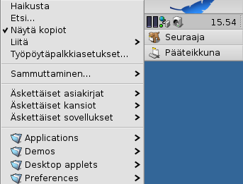
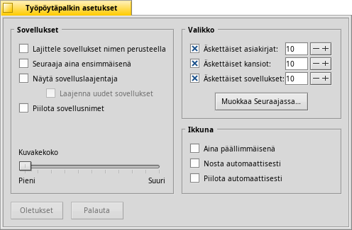
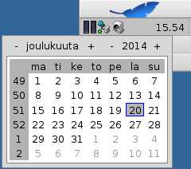
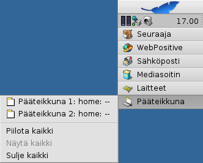

Suomi
Suomi Català
Català Deutsch
Deutsch English
English Español
Español Français
Français Italiano
Italiano Magyar
Magyar Polski
Polski Português
Português Português (Brazil)
Português (Brazil) Română
Română Slovenčina
Slovenčina Svenska
Svenska 中文 ［中文］
中文 ［中文］ Русский
Русский Українська
Українська 日本語
日本語| Hakemisto |
|
Työpöytäpalkkivalikko Tarjotin Käynnissä olevien ohjelmien luettelo |
Työpöytäpalkki
Työpöytäpalkki on pieni paneeli, joka oletuksena sijaitsee näytön oikeanpuoleisessa yläkulmassa. Se on Haikun versio Windowsin tehtäväpalkista Käynnistä-painikkeineen. Se sisältää Työpöytäpalkkivalikon, josta voit käynnistää sovellukset ja asetusohjelmat, tarjottimen kellolla ja muilla työkaluilla sen alla sekä alimmaisena parhaillaan suoritettavien ohjelmien luettelo.

Voit siirtää Työpöytäpalkin mihin nurkkaan tahansa tai palkkina näytön ylä- tai alarajalle tarttumalla pisteviiva-alueeseen tarjottimen sivussa ja raahaamalla ja pudottamalla sen uuteen paikkaan. Voit taittaa sen myös pienempään tilaan raahaamalla ja pudottamalla pisteviiva-alueen Työpöytäpalkkivalikkoon.
 Työpöytäpalkkivalikko
Työpöytäpalkkivalikko
Valikko avautuu, kun napsautat Työpöytäpalkin yläosaa.
Haikusta... - Näyttää joitakin järjestelmän perustietoja, lisenssitiedot ja Haiku-hankkeen tunnustukset kehittäjille.
Etsi... - Avaa Kysely-valintaikkunan.
Näytä kopiot - Näyttää/piilottaa pienen Kopio-käyttöliittymäkomponentin, jota käytät aiheyhteysvalikon ympäriinsä raahaamiseen, poistamiseen ja kutsumiseen.
Liitä - Tarjoaa samat valitsimet kuin kutsuttaessa hiiren kakkospainikkeella työpöydältä (katso Liitä taltiot).
Työpöytäpalkkiasetukset... - Avaa paneelin Työpöytäpalkin asetuksia varten (katso alla).
Sammuttaminen - Avaa valitsimet joko tai .
Äskettäiset asiakirjat, kansiot ja sovellukset - Viimeiseksi avattujen asiakirjojen, kansioiden ja sovellusten luettelo (katso alla).
Sovellukset, Esittelyohjelmat, Työpöytäsovelmat ja Asetusohjelmat - Asennettujen sovellusten, esittelyohjelmien, sovelmien ja asetusohjelmien luettelo.
Voit lisätä linkin muihin ohjelmiin (tai mihin tahansa kansioon, asiakirjaan, kyselyyn jne.) laittamalla ne kansioon ~/config/settings/deskbar/menu/.
Työpöytäpalkin asetukset

Työpöytäpalkin asetuspaneeli on jaettu kolmeen lohkoon.
Sovellukset
Seuraava asetus ei koske asennettuja sovelluksia, mutta suoritettavien sovellusten luettelon käyttäytymistä ja ulkonäköä.
| Lajittelee suoritettavat ohjelmat aakkosjärjestykseen. | ||
| Vieläpä silloin, kun sovellukset on lajiteltu aakkosjärjestykseen, Seuraaja on aina ensimmäisenä luettelossa. | ||
| Tarjoaa pienen käyttöliittymäkomponentin näyttämään/piilottamaan ohjelman kaikki ikkunat sen Työpöytäpalkkirivin alle. | ||
| Vasta käynnistettyjen ohjelmien ikkunat laajenevat automaattisesti niiden Työpöytäpalkkirivillä. | ||
| Poistaa suoritettavien sovellusten tekstinimiöt. | ||
| Säätää suoritettavien sovellusten kuvakekoon. |
Valikko
Vaikka Työpöytäpalkin pari ensimmäistä valikkoriviä ovat kiinteitä, voit räätälöidä -valikkorivin alla olevia.
Tässä voit asettaa Työpöytäpalkin valikossa näkyvien äskettäisten asiakirjojen, kansioiden ja sovellusten lukumäärän, tai haluatko nähdä niitä ollenkaan.
Painike avaa kansion ~/config/settings/deskbar/menu/. Siitä löydät tiedostot ja kansiot, jotka ilmaantuvat Työpöytäpalkkiin, oletuksena näitä ovat , , , ja .
Voit poistaa ja lisätä kohteita kuten linkkejä sovelluksiin, asiakirjoihin tai jopa kyselyjä yksinkertaisesti kopioimalla/poistamalla niitä tästä kansiosta tai tähän kansioon.
Pakkauksesta automaattisesti asennetut ohjelmat laittavat valikkorivin Työpöytäpalkkiin. Asennettujen pakkausten lukumäärästä riippuen Työpöytäpalkki voi kasvaa liian laajaksi. Jos haluat mieluiten ohjata asetuksia itse ja haluat nähdä Työpöytäpalkissa vain ne sovellukset, jotka linkität sinne (mahdollisesti luokittelemalla alikansioihin), niin tee se näin:
Luo valikolle menu-kansion linkki paikkaan ~/config/settings/deskbar/ ja nimeä uudelleen menu_entries. Pääteikkunassa linkki luodaan:
ln -s ~/config/settings/deskbar/menu ~/config/settings/deskbar/menu_entries
Ikkuna
Lopuksi Työpöytäpalkki-ikkunan asetukset.
| Työpöytäpalkki pysyy aina kaikkien muiden ikkunoiden päällä. | ||
| Työpöytäpalkki ponnahtaa etualalle, jos hiiren kohdistin koskettaa sitä. | ||
| Työpöytäpalkki on pienennetty vain muutaman pikselin kokoiseksi ja ponnahtaa näkyviin vain, jos hiiren kohdistin koskettaa niitä. |
Tarjotin

Muiden asioiden lisäksi tarjotin on säilytyspaikka kellolle. Hiiren kohdistimen siirtäminen sen yläpuolelle näyttää päivämäärän työkaluvihjeessä. Hiiren vasemmalla painikkeella saa näkyviin kalenterin. Hiiren oikealla painikeella piilotetaan/näytetään kello tai käynnistetään Aika-asetukset sen asettamiseksi.
Mikä tahansa ohjelma voi asentaa kuvakkeen tarjottimelle tarjoten käyttöliittymän käyttäjälle. Sähköpostijärjestelmä, esimerkiksi, näyttää erilaisen symbolin silloin kun on lukematonta postia ja tarjoaa asiayhteysvalikon esimerkiksi uuden sähköpostiviestin luomiseksi tai lukemiseksi. Prosessivalvonta on toinen esimerkki, joka käyttää tarjottimen kuvakkeita tietojen tarjoamiseen (prosessori/muistikäyttö) ja tarjoaa asiayhteysvalikon.
Käynnissä olevien ohjelmien luettelo

Voit vaihtaa tiettyä suoritettavaa sovellusta napsauttamalla sen riviä Työpöytäpalkissa ja valitsemalla alivalikosta (yhden sen) ikkunoista. Hiiren kakkospainikkeella voit tehdä ikkunoille tai ja sulkea niillä koko sovelluksen.
Painamalla näppäimiä VAIHTO CTRL ja napsauttamalla sovellusta piilotat kaikki sen ikkunat, näppäin CTRL ja hiiren napsautus näyttää ne taas.
Jos aktivoit Laajentajat Työpöytäpalkin asetuksissa, voit laajentaa/supistaa ikkunoiden luettelon suoraan sovellusrivin alla.
Jokaisen sovellusikkunan edessä on symboli, joka tarjoaa tietoa sen tilasta. Kirkas symboli tarkoittaa, että ikkuna on näkyvissä, tumma symboli tarkoittaa, että se on minimoitu. Kolme viivaa symbolin edessä näyttää, että se ei ole nykyisessä työtilassa.